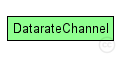

This documentation is released under the Creative Commons license
This documentation is released under the Creative Commons license(no description)
The following diagram shows usage relationships between types. Unresolved types are missing from the diagram. Click here to see the full picture.
The following diagram shows inheritance relationships for this type. Unresolved types are missing from the diagram. Click here to see the full picture.

| Name | Type | Default value | Description |
|---|---|---|---|
| disabled | bool | false | |
| delay | double | 0s |
propagation delay |
| datarate | double | 0bps |
bits per second; 0=infinite |
| ber | double | 0 |
bit error rate (BER) |
| per | double | 0 |
packet error rate (PER) |
| Name | Value | Description |
|---|---|---|
| class | cDatarateChannel |
| Name | Type | Unit |
|---|---|---|
| messageDiscarded | cMessage | |
| messageSent | cMessage | |
| channelBusy | int |
| Name | Title | Source | Record | Unit | Interpolation Mode |
|---|---|---|---|---|---|
| utilization | timeavg(channelBusy) | last? | |||
| packetsDiscarded | constant1(messageDiscarded) | count? | none | ||
| packetBytes | packetBytes(messageSent) | sum? | B | none | |
| packets | constant1(messageSent) | count? | none | ||
| busy | channelBusy | vector? | sample-hold | ||
| throughput | sumPerDuration(packetBits(messageSent)) | last? | bps |
channel DatarateChannel { @class(cDatarateChannel); @signal[channelBusy](type="int"); @signal[messageSent](type=cMessage); @signal[messageDiscarded](type=cMessage); @statistic[busy](source=channelBusy; record=vector?; interpolationmode=sample-hold); @statistic[utilization](source="timeavg(channelBusy)"; record=last?); @statistic[packets](source="constant1(messageSent)"; record=count?; interpolationmode=none); @statistic[packetBytes](source="packetBytes(messageSent)"; record=sum?; unit=B; interpolationmode=none); @statistic[packetsDiscarded](source="constant1(messageDiscarded)"; record=count?; interpolationmode=none); @statistic[throughput](source="sumPerDuration(packetBits(messageSent))"; record=last?; unit=bps); bool disabled = default(false); double delay @unit(s) = default(0s); // propagation delay double datarate @unit(bps) = default(0bps); // bits per second; 0=infinite double ber = default(0); // bit error rate (BER) double per = default(0); // packet error rate (PER) }
This documentation is released under the Creative Commons license